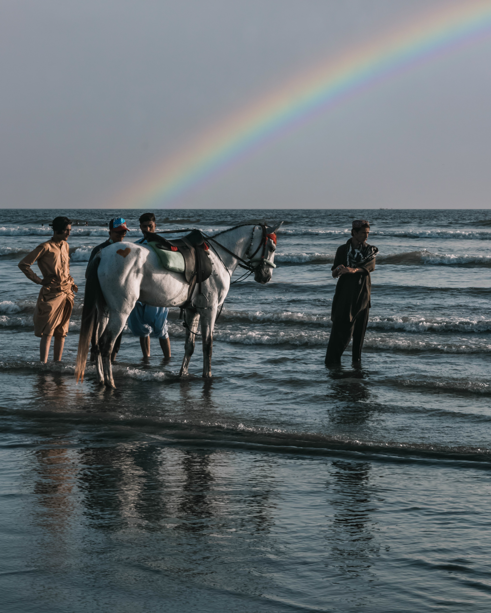

Hawks Bay
The beach is very popular, with hundreds of people visiting daily for swimming, camel and horse riding, and vacations

Karachi Cuisine
It is a multicultural cuisine as a result of the city consisting of various ethnic groups from different parts of Pakistan.

Industry
Contributes a large portion of Karachi's economy, Pakistan's largest companies dealing in textiles, cement, steel, heavy machinery, chemicals, and food products.